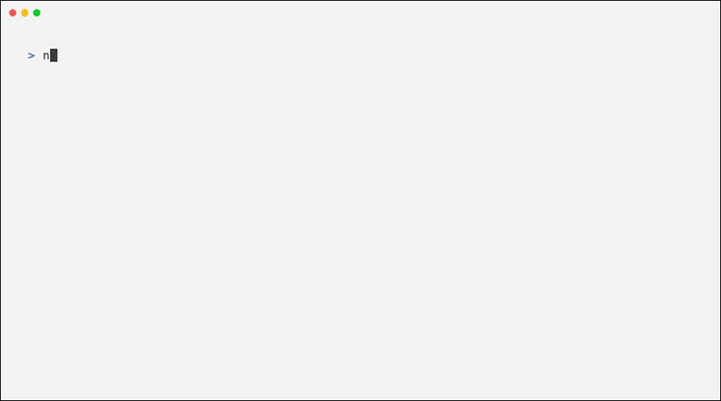
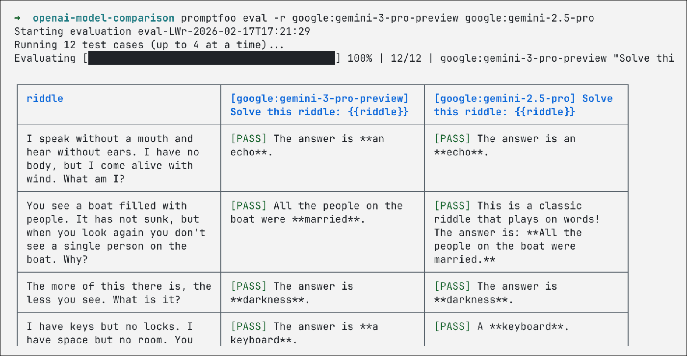
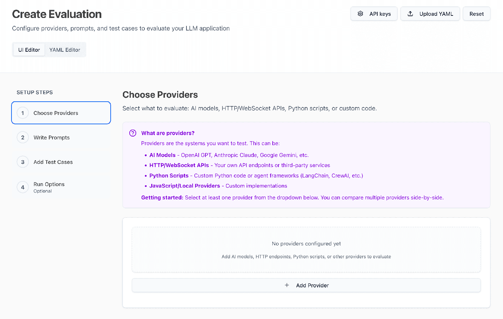
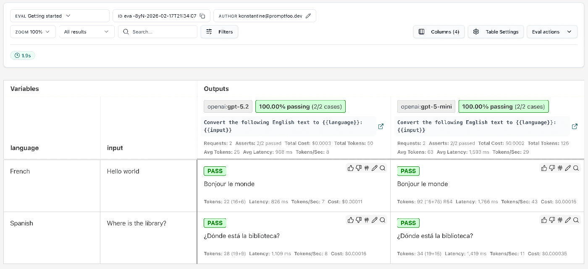

MobileWork · Expert Eval · Promptfoo
面向「2026 SWARM · MobileWork 专家（团）观测、评估、基准测试与优化系统」课题：以 Promptfoo 为评测框架、opencode:sdk 为执行器，驱动真实软件开发专家团 software-team-lead 运行，产出可追溯证据。
01 · Background
课题任务要求构建可验证、可重复、可追溯的专家（团）评测链路。个人本周完成最小完整链路与真实运行验证。
四个关键认知：专家团本质是「提示词定义角色/功能 + 权限配置」；Promptfoo 不自动生成常规评测用例（其 Red Team 模块另有自动生成对抗测试的能力）；case 与断言须由个人编写，Promptfoo 提供稳定可靠的执行与判定框架；opencode:sdk 可作为执行器接入真实 OpenCode 会话。
通过 mobilework-expert-manager 插件将 WorkBuddy 软件开发专家团转换为 OpenCode 格式（expert.json 为唯一事实源）。
阅读官方文档与文件夹配置：.opencode/agents/*.md 与 opencode.jsonc 定义各智能体的角色、功能与权限。
编写简单用例并测试专家团；理解它只提供执行与判定框架，case 与断言必须自己设计。
以 opencode:sdk 作为 provider 驱动真实 OpenCode 会话，完成专家团评测。
评测插件 + 真实运行打通 + 自测闭环 + 工程沉淀，形成可复现的评测资产。
按 Claude Code Marketplace 规范构建 promptfoo-expert-eval：.claude-plugin/ + skills/ + 内置 4 个 case，支持自定义 case。
排除 4 个根因后，bugfix-utils case 真实端到端运行 PASS score=1.0，产物与会话证据齐全。
插件自测 29/29 全部通过（静态 / 功能 / 解析 / 集成 / 端到端），报告按 MobileWork Design System 渲染。
评测工作区权限适配、opencode 数据目录隔离、SDK 超时适配等经验已写入 README / methodology。
02 · Principle
Promptfoo 是面向 LLM 应用、提示词与智能体的开源评测框架（MIT，TypeScript）。核心是「配置化 case + 断言 + 指标 + 结果对比」。
promptfoo eval 批量执行，promptfoo view 可视化对比。
prompts要评测的提示词模板，支持 {{variable}} 占位符；评测的是「提示词 + 执行器」的组合效果。
providers执行器：OpenAI / Anthropic / Google / Ollama / 自定义……以及本课题使用的 opencode:sdk（驱动 OpenCode 智能体）。
tests + assert测试输入（vars）与断言。断言可选：可确定性自动判定，也可纯人工查看。

本课题涉及的断言类型与适用场景（内置 case 实际使用 contains / regex / javascript；对应课题任务 3.3 三类任务）。
| 断言 | 作用 | 适用 |
|---|---|---|
contains / icontains | 输出是否包含指定子串 | 结构化任务硬约束 |
regex | 输出是否匹配正则（JS 引擎，不支持 Python 的 (?i)） | 结构化 / 混合式 |
javascript | 自定义函数判定，可访问文件系统验证产物（import('node:fs')） | 产物类确定性断言 |
llm-rubric | 模型裁判按 rubric 打分 | 混合式 / 开放式（记录裁判偏差） |
cost / latency | 成本 / 延迟阈值 | 护栏指标（课题任务 4.2） |
03 · Tutorial
以官方 Getting Started 为骨架，落到个人的专家团评测场景。
# Promptfoo（全局） npm install -g promptfoo # opencode CLI + SDK（opencode:sdk provider 必需） curl -fsSL https://opencode.ai/install | bash npm install @opencode-ai/sdk # 模型凭据：deepseek 不在 promptfoo 的 env 映射表，用 --api-key 注入 # export DEEPSEEK_API_KEY=sk-...
# promptfooconfig.yaml —— 官方最小示例
providers:
- openai:chat:gpt-5.4
prompts:
- '把下面的英文翻译成中文：{{input}}'
tests:
- vars:
input: Hello world
assert:
- type: contains
value: '你好'

-r/--override 临时替换 provider，配置中也可定义多个 provider 并行对比。tests:
- vars:
input: Hello world
assert:
- type: contains
value: '你好'
- vars:
input: Where is the library?
assert:
- type: icontains
value: '图书馆'写 case 时思考「核心使用场景 + 可能失败的边界」；Promptfoo 只负责执行与判定，用例要自己设计。
promptfoo eval # 在含 promptfooconfig.yaml 的目录执行 promptfoo view # 打开 Web 可视化对比 promptfoo eval --output out.json --no-cache --no-share
每次运行对「每个 prompt × provider × test」组合发起真实调用，逐一跑断言，汇总为 CLI 表格与 JSON / HTML 输出。

# 本插件 run_eval.py 生成的核心配置（真实运行验证过） providers: - id: opencode:sdk config: working_dir: C:/project/mobile_intern/workspaces/test01-eval # 评测工作区 agent: software-team-lead # 被测团长 provider_id: deepseek model: deepseek-v4-flash apiKey: sk-... # deepseek 必须显式注入 tools: { read: true, grep: true, glob: true, list: true, write: true, edit: true, todowrite: true, lsp: true, bash: true } permission: { read: allow, write: allow, edit: allow, task: allow, bash: {'*': deny, 'node *': allow, 'git status*': allow}, external_directory: deny, doom_loop: deny, question: deny } prompts: - '修复预置工具库中的 Bug……' # 即 case 的 prompt tests: - vars: {} assert: - type: javascript value: | const fsp = import('node:fs'); return fsp.then(m => m.default.existsSync({output_dir_abs} + '/utils/utils.js'));

require / 顶层 await 不可用，用 import('node:fs') + promise 返回值；② 断言正则由 JS 引擎编译，Python 风格 (?i) 会报 Invalid group；③ 有断言失败时 promptfoo 退出码为 100（评估本身完成）。
04 · Live Demo
通过插件链路发起，Promptfoo 驱动真实 OpenCode 会话，专家团完成修复与验证，结果回写入统一证据。
两条 javascript 断言验证真实修复写盘（文件系统），regex 与 contains 验证输出文本。
| 断言 | 类型 | 结果 | 判定依据 |
|---|---|---|---|
| utils.js 修复正确 | javascript | ✓PASS | 文件含 a + b 且含 Set |
| utils.js 存在 | javascript | ✓PASS | fs.existsSync 验证产物 |
| 测试通过证据 | regex | ✓PASS | 输出含 PASS / 通过 |
| 修复对象提及 | contains | ✓PASS | 输出含 unique |
这是 OpenCode 专家团真实会话的最终输出（节选）——委派、修复、QA 回归与验收全部真实发生。
# 团长最终输出（节选，真实运行结果） # 交付总结 · 工具库 Bug 修复与回归验证 ## TL;DR eval-runs/bugfix-utils-01/bugfix-utils/utils/utils.js 中两处预置 Bug 已修复， QA 回归验证 3/3 全部通过（PASS 3 / FAIL 0），无返工、无遗留问题。 ## 修复说明 由软件工程师寇豆码（task_id: ses_037b87b42f...）修改，仅改动 utils/utils.js： add(a, b) : return a - b → return a + b （减法误写，改为两数之和） unique(arr) : return arr → return [...new Set(arr)]（直接返回原数组未去重） 导出结构 module.exports = { add, unique } 保持不变；未在指定目录外创建任何文件。 ## 测试运行结果 node --test ... 3 passed, 0 failed
产物、会话、统一 JSON——全部可回溯。
eval-runs/bugfix-utils-01/bugfix-utils/utils/utils.js
add → a + b，unique → new Set，时间戳与运行一致。
主会话 ses_037b8b51...；工程师子会话 ses_037b87b4...（task_id 可追溯）。
summary.json：逐 case 断言、评分、产物路径、session、异常——下游本地 Web / 优化闭环的数据入口。
覆盖课题任务三类任务，每个 case 声明任务、评判方法、主指标与异常判定。
| case | 类型 | 任务 | 评测方法 |
|---|---|---|---|
todo-cli | 结构化 | Node.js CLI Todo 应用 + 测试 | 产物断言 + 文本断言 |
prd-priority | 混合式 | 二手书交易小程序 PRD（P0/P1/P2） | 硬约束断言 + 文档产物 |
feature-design | 开放式 | 协作白板 MVP 后端 API 设计 | 文档产物 + 接口要素（无硬性通过率） |
bugfix-utils | 混合式 | 修复预置工具库 Bug + 回归验证 | 修复断言 + 测试证据（已真实运行 PASS） |
mobilework-expert-eval-plugin/test-reports/test-report.html。
05 · Debugging
从「样例能跑」到「专家团真实评测跑通」，排除了 4 个根因——这些经验直接写入插件文档，是可复用工程资产。
deepseek 不在 promptfoo opencode:sdk 的 getApiKey env 映射表（仅 anthropic / openai / google）。
权限以 agents/*.md frontmatter 为准且优先于 provider permission；非交互下 bash: ask 阻塞。
多个 opencode server 并发写全局 opencode.db，SQLite 外键约束失败。
opencode SDK session.prompt 默认 provider 超时 300s，长任务被 cancel。
--api-key 注入 · 评测工作区 test01-eval · 独立 XDG_DATA_HOME · case 规模控制。
06 · Checklist
当前插件在课题任务硬门槛上的落点与状态。
| 课题任务要求 | 当前落点 | 状态 |
|---|---|---|
| Promptfoo 真实入链（G4 / 5.1） | opencode:sdk 执行 + assert 评判，结果入 summary.json 统一证据 | ✓已打通 |
| 真实 OpenCode（G3） | 真实会话驱动 software-team-lead，委派 4 团员，产物写盘 | ✓已验证 |
| 多方法评估（G13 / 3.3） | 三类任务匹配断言策略；llm-rubric 可选启用（记录裁判偏差） | →就绪 |
| 可重复基准（G9 / 6.3） | --repeat 5、--no-cache、maxConcurrency:1、run 目录隔离 | →就绪 |
| 异常隔离（G15） | 超时 / 崩溃 / 空结果记为异常，不进 PASS 统计 | →就绪 |
| 本地 Web / 人工建议 / 优化副本 | 后续模块，summary.json 为统一数据入口 | ○待扩展 |